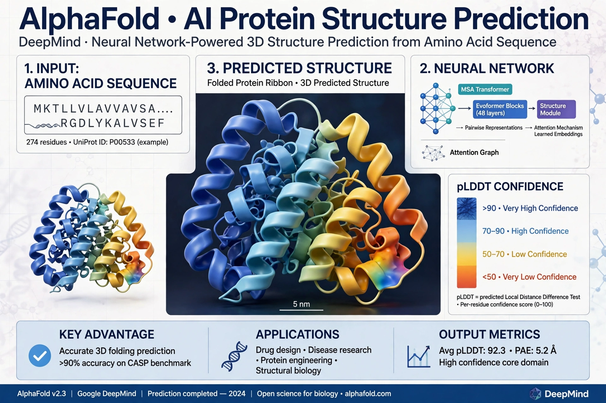

AlphaFold is an artificial intelligence system developed by DeepMind that predicts a protein's three-dimensional structure from its amino acid sequence. It regularly achieves accuracy competitive with experimental methods.

AlphaFold 1 won CASP13 (2018). AlphaFold 2 won CASP14 (2020) with median accuracy so high it was hailed as solving the protein folding problem. In 2021 DeepMind and EMBL-EBI released the AlphaFold Protein Structure Database with predictions for over 200 million proteins. AlphaFold 3 (2024) extended prediction to complexes with DNA, RNA, ligands and ions.
The network uses multiple sequence alignments, pair representations and attention (Evoformer), followed by a structure module, with per-residue confidence (pLDDT).
Demis Hassabis and John Jumper shared half of the 2024 Nobel Prize in Chemistry for protein structure prediction. Predictions complement data in the Protein Data Bank.